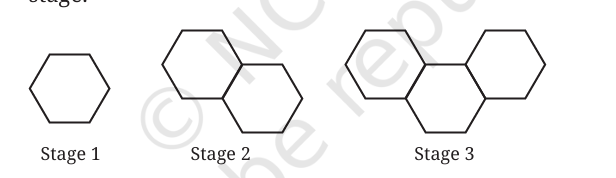
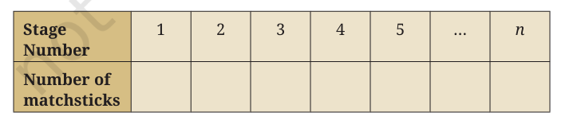

End-of-Chapter Practice Exercises
00:00
Overview
This page provides comprehensive Ch 2: Polynomials - End-of-Chapter Exercises. Master linear polynomials, equations, graphing parameters, and progressive patterns with matchstick hexagons. Free step-by-step NCERT solutions and explanations.
Comprehensive Revision Questions
Q1: Polynomial Construction
Write a polynomial of degree 3 in the variable $x$, in which the coefficient of the $x^2$ term is $-7$.
A polynomial of degree 3 in the variable $x$ has the general form:
$$p(x) = ax^3 + bx^2 + cx + d \quad (a \neq 0)$$
We are given that the coefficient of the $x^2$ term is $-7$. Thus, $b = -7$.
We can choose any non-zero value for $a$ and any values for $c$ and $d$. Let's select $a = 1$, $c = 5$, and $d = 3$.
This gives: $$p(x) = x^3 - 7x^2 + 5x + 3$$
This gives: $$p(x) = x^3 - 7x^2 + 5x + 3$$
e.g., $x^3 - 7x^2 + 5x + 3$
Q2: Evaluate Polynomials
Find the values of the following polynomials at the indicated values of the variables.
(i) $5x^2 - 3x + 7$ if $x = 1$
(ii) $4t^3 - t^2 + 6$ if $t = a$
(i) $5x^2 - 3x + 7$ if $x = 1$
(ii) $4t^3 - t^2 + 6$ if $t = a$
(i) $5x^2 - 3x + 7$ at $x = 1$:
Substitute $x = 1$ in the polynomial: $$5(1)^2 - 3(1) + 7 = 5(1) - 3 + 7 = 5 - 3 + 7 = 9$$
Substitute $x = 1$ in the polynomial: $$5(1)^2 - 3(1) + 7 = 5(1) - 3 + 7 = 5 - 3 + 7 = 9$$
(ii) $4t^3 - t^2 + 6$ at $t = a$:
Substitute $t = a$ in the polynomial: $$4(a)^3 - (a)^2 + 6 = 4a^3 - a^2 + 6$$
Substitute $t = a$ in the polynomial: $$4(a)^3 - (a)^2 + 6 = 4a^3 - a^2 + 6$$
(i) $9$, (ii) $4a^3 - a^2 + 6$
Q3: Number Puzzle
If we multiply a number by $\frac{5}{2}$ and add $\frac{2}{3}$ to the product, we get $-\frac{7}{12}$. Find the number.
Let the required number be $x$.
According to the problem:
$$\frac{5}{2}x + \frac{2}{3} = -\frac{7}{12}$$
Subtract $\frac{2}{3}$ from both sides:
$$\frac{5}{2}x = -\frac{7}{12} - \frac{2}{3}$$
$$\frac{5}{2}x = -\frac{7}{12} - \frac{8}{12} = -\frac{15}{12}$$
$$\frac{5}{2}x = -\frac{5}{4}$$
Multiply both sides by $\frac{2}{5}$ to find $x$:
$$x = -\frac{5}{4} \times \frac{2}{5} = -\frac{2}{4} = -\frac{1}{2}$$
The number is $-\frac{1}{2}$
Q4: Relation of Two Positive Numbers
A positive number is 5 times another number. If 21 is added to both the numbers, then one of the new numbers becomes twice the other new number. What are the numbers?
Let the smaller number be $x$. The other positive number is $5x$.
When 21 is added to both numbers:
The new smaller number = $x + 21$
The new larger number = $5x + 21$
The new smaller number = $x + 21$
The new larger number = $5x + 21$
According to the problem, the larger new number is twice the smaller new number:
$$5x + 21 = 2(x + 21)$$
$$5x + 21 = 2x + 42$$
$$3x = 21$$
$$x = 7$$
Therefore:
Smaller number = $7$
Larger number = $5(7) = 35$
Smaller number = $7$
Larger number = $5(7) = 35$
The numbers are 7 and 35
Q5: Monthly Savings Pattern
If you have ₹800 and you save ₹250 every month, find the amount you have after (i) 6 months, (ii) 2 years. Express this as a linear pattern.
Let the number of months be represented by the variable $m$.
Initial amount = ₹800.
Savings per month = ₹250.
Initial amount = ₹800.
Savings per month = ₹250.
The linear pattern representing the total amount $A(m)$ after $m$ months is:
$$A(m) = 800 + 250m$$
(i) After 6 months ($m = 6$):
$$A(6) = 800 + 250(6) = 800 + 1500 = \text{₹}2,300$$
(ii) After 2 years ($m = 24$ months):
$$A(24) = 800 + 250(24) = 800 + 6,000 = \text{₹}6,800$$
(i) ₹2,300, (ii) ₹6,800; Linear Pattern: $250m + 800$
Q6: Two-Digit Number Interchange
The digits of a two-digit number differ by 3. If the digits are interchanged, and the resulting number is added to the original number, we get 143. Find both the numbers.
Let the tens digit be $x$ and the units digit be $y$.
The original number is $10x + y$.
The interchanged number is $10y + x$.
The original number is $10x + y$.
The interchanged number is $10y + x$.
We are given that the sum of these two numbers is 143:
$$(10x + y) + (10y + x) = 143$$
$$11x + 11y = 143$$
$$x + y = 13 \quad \text{--- (Equation 1)}$$
The digits differ by 3:
$$|x - y| = 3$$
This gives two cases:
Case 1: $x - y = 3$
Adding this to Equation 1: $$(x + y) + (x - y) = 13 + 3 \implies 2x = 16 \implies x = 8$$ $$y = 8 - 3 = 5$$ Original number is $85$.
Case 2: $y - x = 3$
Adding this to Equation 1: $$(x + y) + (y - x) = 13 + 3 \implies 2y = 16 \implies y = 8$$ $$x = 8 - 3 = 5$$ Original number is $58$.
Case 1: $x - y = 3$
Adding this to Equation 1: $$(x + y) + (x - y) = 13 + 3 \implies 2x = 16 \implies x = 8$$ $$y = 8 - 3 = 5$$ Original number is $85$.
Case 2: $y - x = 3$
Adding this to Equation 1: $$(x + y) + (y - x) = 13 + 3 \implies 2y = 16 \implies y = 8$$ $$x = 8 - 3 = 5$$ Original number is $58$.
The numbers are 58 and 85
Q7: Slope, Intercept, and Parallel Lines
Draw the graph of the following equations, and identify their slopes and y-intercepts. Also, find the coordinates of the points where these lines cut the y-axis.
(i) $y = -3x + 4$
(ii) $2y = 4x + 7$
(iii) $5y = 6x - 10$
(iv) $3y = 6x - 11$
Are any of the lines parallel?
(i) $y = -3x + 4$
(ii) $2y = 4x + 7$
(iii) $5y = 6x - 10$
(iv) $3y = 6x - 11$
Are any of the lines parallel?
Transform all equations to the slope-intercept form $y = ax + b$:
(i) $y = -3x + 4$:
Slope $a = -3$, y-intercept $b = 4$.
Cuts the y-axis at $(0, 4)$.
Slope $a = -3$, y-intercept $b = 4$.
Cuts the y-axis at $(0, 4)$.
(ii) $2y = 4x + 7 \implies y = 2x + \frac{7}{2}$:
Slope $a = 2$, y-intercept $b = \frac{7}{2} = 3.5$.
Cuts the y-axis at $(0, 3.5)$.
Slope $a = 2$, y-intercept $b = \frac{7}{2} = 3.5$.
Cuts the y-axis at $(0, 3.5)$.
(iii) $5y = 6x - 10 \implies y = \frac{6}{5}x - 2$:
Slope $a = \frac{6}{5} = 1.2$, y-intercept $b = -2$.
Cuts the y-axis at $(0, -2)$.
Slope $a = \frac{6}{5} = 1.2$, y-intercept $b = -2$.
Cuts the y-axis at $(0, -2)$.
(iv) $3y = 6x - 11 \implies y = 2x - \frac{11}{3}$:
Slope $a = 2$, y-intercept $b = -\frac{11}{3}$.
Cuts the y-axis at $(0, -\frac{11}{3})$.
Slope $a = 2$, y-intercept $b = -\frac{11}{3}$.
Cuts the y-axis at $(0, -\frac{11}{3})$.
Are any lines parallel?
Lines are parallel if they have the same slope. Lines (ii) and (iv) both have a slope of $a = 2$, so they are parallel.
Lines are parallel if they have the same slope. Lines (ii) and (iv) both have a slope of $a = 2$, so they are parallel.
Parallel: (ii) and (iv); Slopes: (i) -3, (ii) 2, (iii) 1.2, (iv) 2
Q8: Kelvin to Fahrenheit Conversion
If the temperature of a liquid can be measured in Kelvin units as $x$ K and in Fahrenheit units as $y$ °F, the relation between the two systems of measurement of temperature is given by the linear equation:
$$y = \frac{9}{5}(x - 273) + 32$$
(i) Find the temperature of the liquid in Fahrenheit if the temperature of the liquid is 313 K.
(ii) If the temperature is 158 °F, then find the temperature in Kelvin.
(ii) If the temperature is 158 °F, then find the temperature in Kelvin.
(i) Find Fahrenheit for $x = 313$ K:
$$y = \frac{9}{5}(313 - 273) + 32$$
$$y = \frac{9}{5}(40) + 32$$
$$y = 9(8) + 32 = 72 + 32 = 104\text{ °F}$$
(ii) Find Kelvin for $y = 158$ °F:
$$158 = \frac{9}{5}(x - 273) + 32$$
$$158 - 32 = \frac{9}{5}(x - 273)$$
$$126 = \frac{9}{5}(x - 273)$$
$$126 \times \frac{5}{9} = x - 273$$
$$14 \times 5 = x - 273$$
$$70 = x - 273$$
$$x = 343\text{ K}$$
(i) $104\text{ °F}$, (ii) $343\text{ K}$
Q9: Work and Force Relationship
The work done by a body on the application of a constant force is the product of the constant force and the distance travelled by the body in the direction of the force. Express this in the form of a linear equation in two variables (work $w$ and distance $d$), and draw its graph by taking the constant force as 3 units. What is the work done when the distance travelled is 2 units? Verify it by plotting it on the graph.
Formulate the equation:
$$\text{Work } (w) = \text{Force } (F) \times \text{Distance } (d)$$
With a constant force $F = 3$ units, the linear equation in two variables is:
$$w = 3d$$
Calculate the work done when distance $d = 2$ units:
$$w = 3(2) = 6\text{ units of work}$$
To verify on the graph, plot the line $w = 3d$ with points like $(0, 0)$, $(1, 3)$, and $(2, 6)$. Point $(2, 6)$ confirms that when the distance is 2 units, the work done is indeed 6 units.
Equation: $w = 3d$; Work done = 6 units
Q10: Finding Polynomial from Graph Points
The graph of a linear polynomial $p(x)$ passes through the points $(1, 5)$ and $(3, 11)$.
(i) Find the polynomial $p(x)$.
(ii) Find the coordinates where the graph of $p(x)$ cuts the axes.
(iii) Draw the graph of $p(x)$ and verify your answers.
(i) Find the polynomial $p(x)$.
(ii) Find the coordinates where the graph of $p(x)$ cuts the axes.
(iii) Draw the graph of $p(x)$ and verify your answers.
(i) Find the polynomial $p(x) = ax + b$:
We have: $$p(1) = 5 \implies a(1) + b = 5 \implies a + b = 5 \quad \text{--- (Equation 1)}$$ $$p(3) = 11 \implies a(3) + b = 11 \implies 3a + b = 11 \quad \text{--- (Equation 2)}$$
We have: $$p(1) = 5 \implies a(1) + b = 5 \implies a + b = 5 \quad \text{--- (Equation 1)}$$ $$p(3) = 11 \implies a(3) + b = 11 \implies 3a + b = 11 \quad \text{--- (Equation 2)}$$
Subtract Equation 1 from Equation 2:
$$(3a + b) - (a + b) = 11 - 5$$
$$2a = 6 \implies a = 3$$
Substitute $a = 3$ back into Equation 1:
$$3 + b = 5 \implies b = 2$$
So the polynomial is:
$$p(x) = 3x + 2$$
(ii) Find axis intersection coordinates:
- Cuts y-axis when $x = 0$: $y = 3(0) + 2 = 2 \implies (0, 2)$
- Cuts x-axis when $y = 0$: $3x + 2 = 0 \implies 3x = -2 \implies x = -\frac{2}{3} \implies \left(-\frac{2}{3}, 0\right)$
$p(x) = 3x + 2$; Cuts y-axis at $(0, 2)$, cuts x-axis at $\left(-\frac{2}{3}, 0\right)$
Q11: Solve Two Polynomials
Let $p(x) = ax + b$ and $q(x) = cx + d$ be two linear polynomials such that:
(i) $p(0) = 5$.
(ii) The polynomial $p(x) - q(x)$ cuts the x-axis at $(3, 0)$.
(iii) The sum $p(x) + q(x)$ is equal to $6x + 4$ for all real $x$.
Find the polynomials $p(x)$ and $q(x)$.
(i) $p(0) = 5$.
(ii) The polynomial $p(x) - q(x)$ cuts the x-axis at $(3, 0)$.
(iii) The sum $p(x) + q(x)$ is equal to $6x + 4$ for all real $x$.
Find the polynomials $p(x)$ and $q(x)$.
From condition (i), $p(0) = 5$:
$$p(0) = a(0) + b = 5 \implies b = 5$$
From condition (iii), $p(x) + q(x) = 6x + 4$:
$$(ax + b) + (cx + d) = (a+c)x + (b+d) = 6x + 4$$
Comparing coefficients:
$$a + c = 6 \quad \text{--- (Equation 1)}$$
$$b + d = 4 \quad \text{--- (Equation 2)}$$
Substitute $b = 5$ into Equation 2:
$$5 + d = 4 \implies d = -1$$
Now consider condition (ii). $p(x) - q(x)$ cuts the x-axis at $(3, 0)$:
$$p(x) - q(x) = (ax + b) - (cx + d) = (a-c)x + (b-d)$$
Substitute $b = 5$ and $d = -1$:
$$p(x) - q(x) = (a-c)x + (5 - (-1)) = (a-c)x + 6$$
Since it cuts the x-axis at $x = 3$, the value must be 0:
$$(a-c)(3) + 6 = 0$$
$$3(a-c) = -6 \implies a - c = -2 \quad \text{--- (Equation 3)}$$
Solve Equation 1 and Equation 3:
$$(a + c) + (a - c) = 6 - 2$$
$$2a = 4 \implies a = 2$$
$$c = 6 - 2 = 4$$
Thus, the polynomials are:
$$p(x) = 2x + 5$$
$$q(x) = 4x - 1$$
$p(x) = 2x + 5$, $q(x) = 4x - 1$
Q12: Hexagon Matchstick Pattern
Look at the first three stages of a growing pattern of hexagons made using matchsticks. A new hexagon gets added at every stage which shares a side with the last hexagon of the previous stage.
(i) Draw the next two stages of the pattern. How many matchsticks will be required at these stages?
(ii) Complete the table:
(iii) Find a rule to determine the number of matchsticks required for the $n$-th stage.
(iv) How many matchsticks will be required for the 15th stage of the pattern?
(v) Can 200 matchsticks form a stage in this pattern? Justify your answer.

(i) Draw the next two stages of the pattern. How many matchsticks will be required at these stages?
(ii) Complete the table:

(iii) Find a rule to determine the number of matchsticks required for the $n$-th stage.
(iv) How many matchsticks will be required for the 15th stage of the pattern?
(v) Can 200 matchsticks form a stage in this pattern? Justify your answer.
(i) Draw next stages & matchsticks counts:
- Stage 1: 1 hexagon. Has 6 matchsticks.
- Stage 2: 2 hexagons. Shares 1 side. $6 + 5 = 11$ matchsticks.
- Stage 3: 3 hexagons. Shares 2 sides. $11 + 5 = 16$ matchsticks.
- Stage 4 (Next): 4 hexagons. Shares 3 sides. $16 + 5 = 21$ matchsticks.
- Stage 5 (Next): 5 hexagons. Shares 4 sides. $21 + 5 = 26$ matchsticks.
(ii) Complete the Table:
| Stage Number ($n$) | Number of Matchsticks |
|---|---|
| 1 | 6 |
| 2 | 11 |
| 3 | 16 |
| 4 | 21 |
| 5 | 26 |
| $n$ | $5n + 1$ |
(iii) Rule for the $n$-th Stage:
The first hexagon requires 6 matchsticks. Each subsequent hexagon adds 5 more matchsticks. For $n$ stages: $$M(n) = 6 + 5(n - 1) = 5n + 1$$
The first hexagon requires 6 matchsticks. Each subsequent hexagon adds 5 more matchsticks. For $n$ stages: $$M(n) = 6 + 5(n - 1) = 5n + 1$$
(iv) Matchsticks for the 15th Stage ($n = 15$):
$$M(15) = 5(15) + 1 = 75 + 1 = 76\text{ matchsticks}$$
(v) Can 200 matchsticks form a stage?
Set the rule equal to 200: $$5n + 1 = 200$$ $$5n = 199$$ $$n = 39.8$$ Since $n$ represents the stage number, it must be a positive integer. Because $39.8$ is not an integer, it is **not possible** to form a stage using exactly 200 matchsticks.
Set the rule equal to 200: $$5n + 1 = 200$$ $$5n = 199$$ $$n = 39.8$$ Since $n$ represents the stage number, it must be a positive integer. Because $39.8$ is not an integer, it is **not possible** to form a stage using exactly 200 matchsticks.
Rule: $5n + 1$; 15th Stage = 76; 200 matchsticks is not possible
Q13: Parallel Polynomial Lines
Let $p(x) = ax + b$ and $q(x) = cx + d$ be two linear polynomials such that:
(i) The graph of $p(x)$ passes through the points $(2, 3)$ and $(6, 11)$.
(ii) The graph of $q(x)$ passes through the point $(4, -1)$.
(iii) The graph of $q(x)$ is parallel to the graph of $p(x)$.
Find the polynomials $p(x)$ and $q(x)$. Also, find the coordinates of the point where these lines meet the x-axis.
(i) The graph of $p(x)$ passes through the points $(2, 3)$ and $(6, 11)$.
(ii) The graph of $q(x)$ passes through the point $(4, -1)$.
(iii) The graph of $q(x)$ is parallel to the graph of $p(x)$.
Find the polynomials $p(x)$ and $q(x)$. Also, find the coordinates of the point where these lines meet the x-axis.
Step 1: Find $p(x) = ax + b$
Since it passes through $(2, 3)$ and $(6, 11)$: $$2a + b = 3 \quad \text{--- (Equation 1)}$$ $$6a + b = 11 \quad \text{--- (Equation 2)}$$
Since it passes through $(2, 3)$ and $(6, 11)$: $$2a + b = 3 \quad \text{--- (Equation 1)}$$ $$6a + b = 11 \quad \text{--- (Equation 2)}$$
Subtract Equation 1 from Equation 2:
$$4a = 8 \implies a = 2$$
Substitute $a = 2$ in Equation 1:
$$2(2) + b = 3 \implies 4 + b = 3 \implies b = -1$$
Thus, the polynomial is:
$$p(x) = 2x - 1$$
Step 2: Find $q(x) = cx + d$
Since $q(x)$ is parallel to $p(x)$, they have the same slope: $$c = a = 2$$ So $q(x) = 2x + d$.
Since $q(x)$ passes through $(4, -1)$: $$-1 = 2(4) + d$$ $$-1 = 8 + d \implies d = -9$$ Thus, the polynomial is: $$q(x) = 2x - 9$$
Since $q(x)$ is parallel to $p(x)$, they have the same slope: $$c = a = 2$$ So $q(x) = 2x + d$.
Since $q(x)$ passes through $(4, -1)$: $$-1 = 2(4) + d$$ $$-1 = 8 + d \implies d = -9$$ Thus, the polynomial is: $$q(x) = 2x - 9$$
Step 3: Find x-axis intersections (where $y = 0$):
- For $p(x)$: $2x - 1 = 0 \implies 2x = 1 \implies x = \frac{1}{2} \implies \left(\frac{1}{2}, 0\right)$
- For $q(x)$: $2x - 9 = 0 \implies 2x = 9 \implies x = \frac{9}{2} \implies \left(\frac{9}{2}, 0\right)$
$p(x) = 2x - 1$, $q(x) = 2x - 9$; meet x-axis at $\left(\frac{1}{2}, 0\right)$ and $\left(\frac{9}{2}, 0\right)$
Q14: Common Properties of Linear Functions
What do all linear functions of the form $f(x) = ax + a$, $a > 0$, have in common?
Examine the function $f(x) = ax + a$. We can factor out the parameter $a$:
$$f(x) = a(x + 1)$$
Find the x-intercept of the function by setting $f(x) = 0$:
$$a(x + 1) = 0$$
Since $a > 0$, we divide by $a$:
$$x + 1 = 0 \implies x = -1$$
This shows that regardless of the value of $a$, the line will always cross the x-axis at the point $(-1, 0)$.
Additionally:
- Their slope $a$ and y-intercept $a$ are always identical.
- Since $a > 0$, they all slope upwards from left to right.
They all pass through the point $(-1, 0)$ and have identical positive slopes and y-intercepts